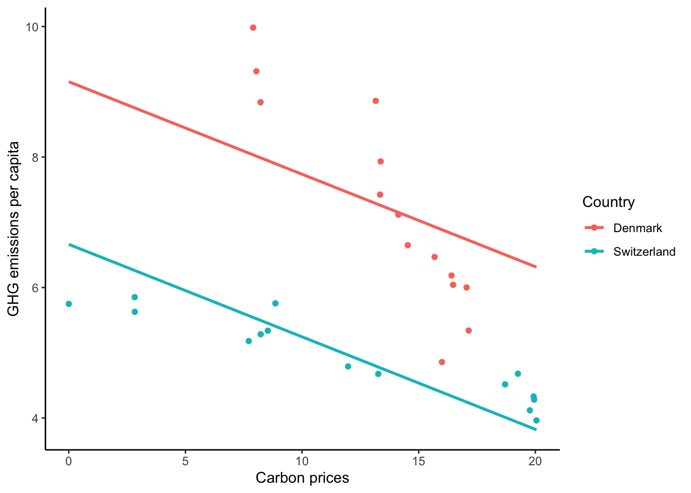

Country Code Year Carbon_price Emission_per_capita
1 Switzerland CHE 2008 2.823883 5.852853
2 Switzerland CHE 2009 2.829404 5.628064
3 Switzerland CHE 2010 8.857406 5.758217
4 Switzerland CHE 2011 7.716105 5.180272
5 Switzerland CHE 2012 8.226921 5.283896
6 Switzerland CHE 2013 8.532256 5.338836
7 Switzerland CHE 2014 11.974738 4.791107
8 Switzerland CHE 2015 13.267141 4.676024
9 Switzerland CHE 2016 19.253305 4.679219
10 Switzerland CHE 2017 18.702318 4.516505Why all this?
In various sciences, researchers try to find causal relationships between two or more variables to answer their research questions. In environmental sciences and economics, for example, one current question is whether carbon prices have a causal influence on an economy’s greenhouse gas (GHG) emissions. To answer a question like this, usually a statistical model is set up to try to quantify the relationship between the predictors 1 and the dependent variable(s) 2.
1 the variable from which an effect originates, e.g., the carbon price
2 the variable that is impacted by the effect, e.g., GHG emissions
However, even if a statistical relationship is found, it is difficult to directly assume a causal relationship. Often there are numerous (potentially unobserved) variables that influence both the predictors and the dependent variable(s). Those variables are called confounders since they possibly confound a causal relationship. In the example from above, a country’s cultural conditions, for example, could be confounders as they might influence the carbon price as well as the GHG emissions.
Why could cultural factors in a country be confounding here?
Suppose a country with a strong cultural commitment to climate protection implements or increases a carbon price and sees a reduction in GHG emissions. In this case, one might attribute the reduction solely to the carbon price. However, the reduction could also be driven by other complementary policies and measures (e.g., renewable energy subsidies, energy efficiency standards) that were adopted due to the same cultural commitment. In this case there would no causal relation between carbon prices and GHG emissions anymore.
To minimize the influence of such confounders, statisticians and social scientists have developed various methods. One of them is Fixed Effects regression.
Fixed Effects regression in a nutshell
Fixed Effects regression is a regression model with which it is relatively easy to control for time-constant confounders. This means we can eliminate the impact of any time-stable variable that might influence our main effect of interest. The beautiful thing here is that we eliminate all time-constant confounders – regardless of whether we observed them or not. In our example, this means that we don’t have to care about any time-constant country characteristics 3 that could in any way confound the relationship between carbon prices and GHG emissions. We achieve this by only looking at the variation of the data within a unit of analysis.
3 There are a lot! Just think about the different political systems, cultural and economic conditions, …
In our example, this means that we examine how the carbon price affects GHG emissions solely within each country. Fixed Effects regression is therefore especially useful if we have several observations of a unit (e.g., a country) – e.g., if we have panel data. In the next section, I will explain how possible data for a Fixed Effects regression looks like and what happens under the hood.
How does a Fixed Effects regression work?
As already mentioned, a Fixed Effects regression is typicallyn done whenever we have repeated observations of or within the same unit (e.g., individuals, countries, …). In a dataset, this could look like this, for example:
Here we see that we have repeated measurements of the predictor carbon price and the dependent variable emissions per capita from Switzerland for several years.
With such a data set, a Fixed Effects regression model could now be set up, which could best be mathematically described with this equation:
\[ Y_{it} = \alpha_i + \beta X_{it}+ \epsilon_{it} \] Let’s break this formula down:
- \(Y\) stands for the value of the dependent variable for unit \(i\) at time point \(t\)
- \(X\) is the vector of all time-variant predictors 4
- \(\beta\) is the matrix of the corresponding parameters of the predictors
- \(\alpha_i\) represents unobserved time-stable individual effects - that’s why the subscript \(t\) is missing here
- The formula also contains an error term \(\epsilon_{it}\) that varies over time and across units
4 in case we have just have one predictor, there is no vector or matrix needed
In our example, which includes only the predictor carbon price, the formula would be as follows:
\[ emissions_{it} = \alpha_i + \beta price_{it} + \epsilon_{it} \]
With our model now established, the next step is to estimate the coefficient(s) \(\beta\) to draw conclusions about the statistical relationships between the variables. There are numerous options for the statistical estimation of our model. In this article, I would like to take a closer look at two very common procedures: demeaning and adding a dummy variable for each unit. This will hopefully also help us to gain a deeper understanding of how Fixed Effects regression eliminates all time-stable confounders.
Statistical estimation by adding a dummy variable for each unit
One of the numerically simplest variants for estimating the model is to construct a dummy variable for each unit (e.g., individuals, countries) 5. When doing this, each unit receives its own intercept. Each intercept then captures all the time-stable characteristics of that unit, meaning any systematic differences between units are absorbed by the individual intercepts.
5 technically, we should omit the first unit to avoid multicollinearity
Let’s take look at the relationship of carbon prices and GHG emissions in two selected countries of our dataset. For illustrative reasons, I select data from Switzerland and Denmark since 2007. When running a linear regression without adding any country-level dummy variables, the results look something like this:

We see one regression line describing our relationship between carbon prices and GHG emissions over all units in our dataset. If we now add a dummy variable for Switzerland and Denmark, the following happens:

We observe that each country now has its own intercept, which captures all time-stable characteristics specific to that country. In our example, these could include factors such as the political system, cultural norms, or economic conditions. So, by adding dummy variables for each country and constructing country-level intercepts, we accounted for all time-constant country-specific confounders.
In practice, I do not recommend estimating the model with dummy variables, as it becomes computationally intensive as soon as you have more than just a few units in your data set. In most situations, the preferred approach is demeaning.
Statistical estimation with demeaning
Another way to extract the within-unit variation and control for time-stable confounders is demeaning or the within transformation. By demeaning, we subtract the mean of all observations for a given unit (e.g., an individual or country) from each observation of that unit. So, in our Switzerland dataset from above, this means we take all our observations of each year, calculate their mean, and then subtract that mean value from each observation. Manually performing this in R could look like this:
df_che |> # data of Switzerland
mutate(Carbon_price = Carbon_price - mean(Carbon_price), # demeaning: subtracting mean from observations
Emission_per_capita = Emission_per_capita - mean(Emission_per_capita))The new dataset that results from such a transformation would then look like this:
Country Code Year Carbon_price Emission_per_capita
1 Switzerland CHE 2008 -10.1669691 0.96726094
2 Switzerland CHE 2009 -10.1614481 0.74247134
3 Switzerland CHE 2010 -4.1334457 0.87262494
4 Switzerland CHE 2011 -5.2747467 0.29467964
5 Switzerland CHE 2012 -4.7639307 0.39830404
6 Switzerland CHE 2013 -4.4585957 0.45324334
7 Switzerland CHE 2014 -1.0161137 -0.09448536
8 Switzerland CHE 2015 0.2762893 -0.20956836
9 Switzerland CHE 2016 6.2624533 -0.20637336
10 Switzerland CHE 2017 5.7114663 -0.36908716To enhance our intuition of how demeaning eliminates time-stable confounders, I would also like to revisit our equations from above. Let’s take a look at our basic Fixed Effects equation – where \(\alpha_i\) stands for our time-constant 6 confounders:
6 note the missing t in the subscript
\[ Y_{it} = \alpha_i + \beta X_{it}+ \epsilon_{it} \]
By demeaning, each observation at all time-points \(t\) is subtracted from the mean of all observations of unit \(i\):
\[ Y_{it} = \alpha_i - \bar \alpha_i + \beta (X_{it} - \bar X_{i}) + \epsilon_{it} - \bar \epsilon_{i} \]
Since \(\alpha_i\) is time-constant and has thus the same value at different time points, its mean \(\bar \alpha\) is identical to \(\alpha_i\) – which eliminates \(\alpha_i\) from our equation. From this follows a transformed equation – in which our time-stable confounders have been removed:
\[ \ddot{Y_{it}}= \ddot{\beta X_{it}} + \ddot{\epsilon_{it}} \]
More thoughts on this
For me, this process illustrates well what the basic idea of a Fixed Effects regression is. We know that time-stable variables of a unit do not change over time. If we perform demeaning and only look at the variation within a unit (where these possible variables remain stable over time) we don’t have to worry about these factors affecting our causal relationship – as they do not vary over time.
After demeaning our data, we then simply calculate an OLS regression – and our Fixed Effects regression is completed. However, if we want to calculate a Fixed Effects model in R, we will not usually do this manually with the steps described here. There are good packages that do all the work for you and save you a lot of time. I can highly recommend the plm-package. You can find some information about it here.